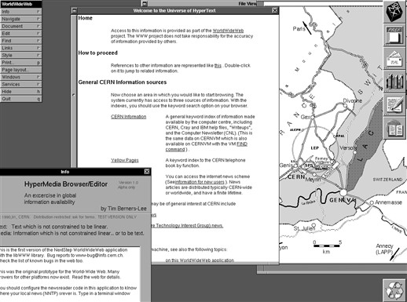

History of WWW/HTML/CSS
WWW - Wolrd Wide Web

The Web extends

Going global
December 1991 - first Web server in the US
Late 1993 - there were over 500 known web servers
1994 was the “Year of the Web”
By the end of 1994, the Web had 10 000 servers and 10 million users.
Open standards
In 1994 was founded the International World Wide Web Consortium (W3C).
In April 1995, INRIA became the first European W3C host
In September 2018, there were more than 400 member organisations from around the world.
HTML
Short for HyperText Markup Language, this language used to create documents on the World Wide Web.
A first attempt at extending HTML in 1995 - HTML 3.0
HTML 3.2 was completed in 1997
HTML4 reaching completion in 1998.
XHTML 1.0 and which was completed in 2000
In 2007 the W3C formed a working group on the development of the HTML5
CSS
Stands for Cascading Style Sheet.